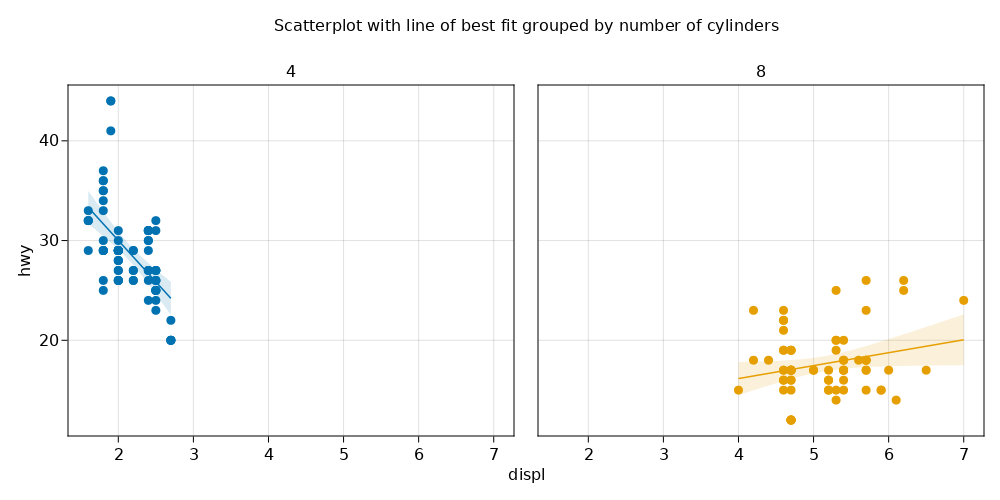

Correlation¶
using CairoMakie
using AlgebraOfGraphics
using DataFrames, DataFramesMeta
using CSV: File
Regression Plot¶
mpg = File("../../data-df/mpg.csv") |> DataFrame;
mpg |> x -> first(x, 5)
5 rows × 11 columns (omitted printing of 1 columns)
| manufacturer | model | displ | year | cyl | trans | drv | cty | hwy | fl | |
|---|---|---|---|---|---|---|---|---|---|---|
| String | String | Float64 | Int64 | Int64 | String | String | Int64 | Int64 | String | |
| 1 | audi | a4 | 1.8 | 1999 | 4 | auto(l5) | f | 18 | 29 | p |
| 2 | audi | a4 | 1.8 | 1999 | 4 | manual(m5) | f | 21 | 29 | p |
| 3 | audi | a4 | 2.0 | 2008 | 4 | manual(m6) | f | 20 | 31 | p |
| 4 | audi | a4 | 2.0 | 2008 | 4 | auto(av) | f | 21 | 30 | p |
| 5 | audi | a4 | 2.8 | 1999 | 6 | auto(l5) | f | 16 | 26 | p |
mpg_select = @chain mpg begin
@rsubset(:cyl in [4, 8])
@rtransform(:cyl = string(:cyl))
end;
fig = Figure(resolution = (1000, 500), title="Figure")
axis = (xticks=0:1:8, yticks=0:10:50)
layers = linear() + visual(Scatter)
mpg_select |>
x -> data(x) * mapping(:displ, :hwy, color = :cyl, col = :cyl) * layers |>
x -> draw!(fig[1, 1], x; axis=axis);
Label(
fig[1, 1, Top()],
"Scatterplot with line of best fit grouped by number of cylinders",
padding = (0, 0, 50, 0))
fig
